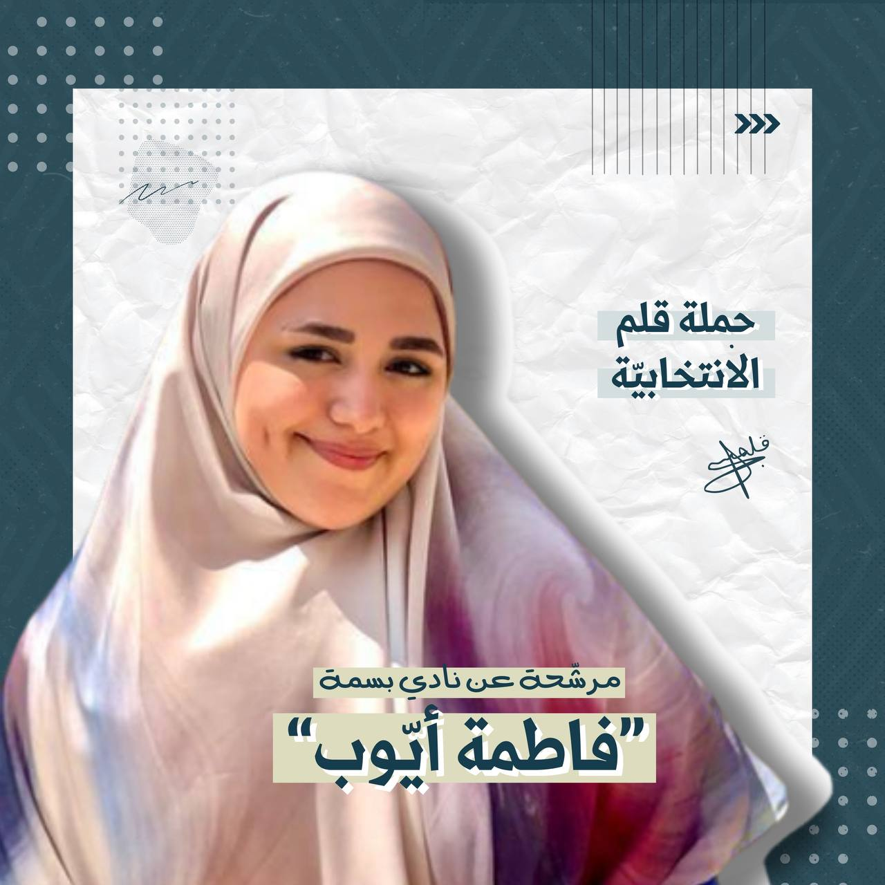
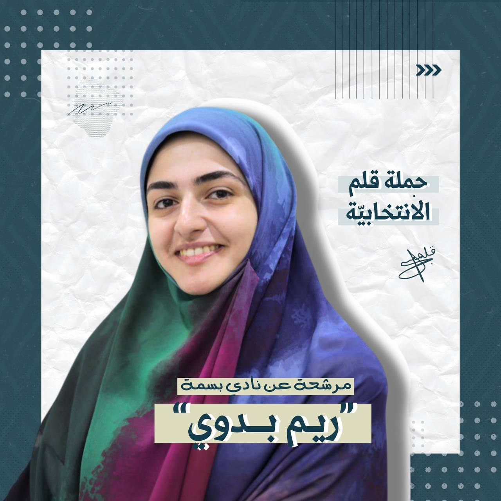
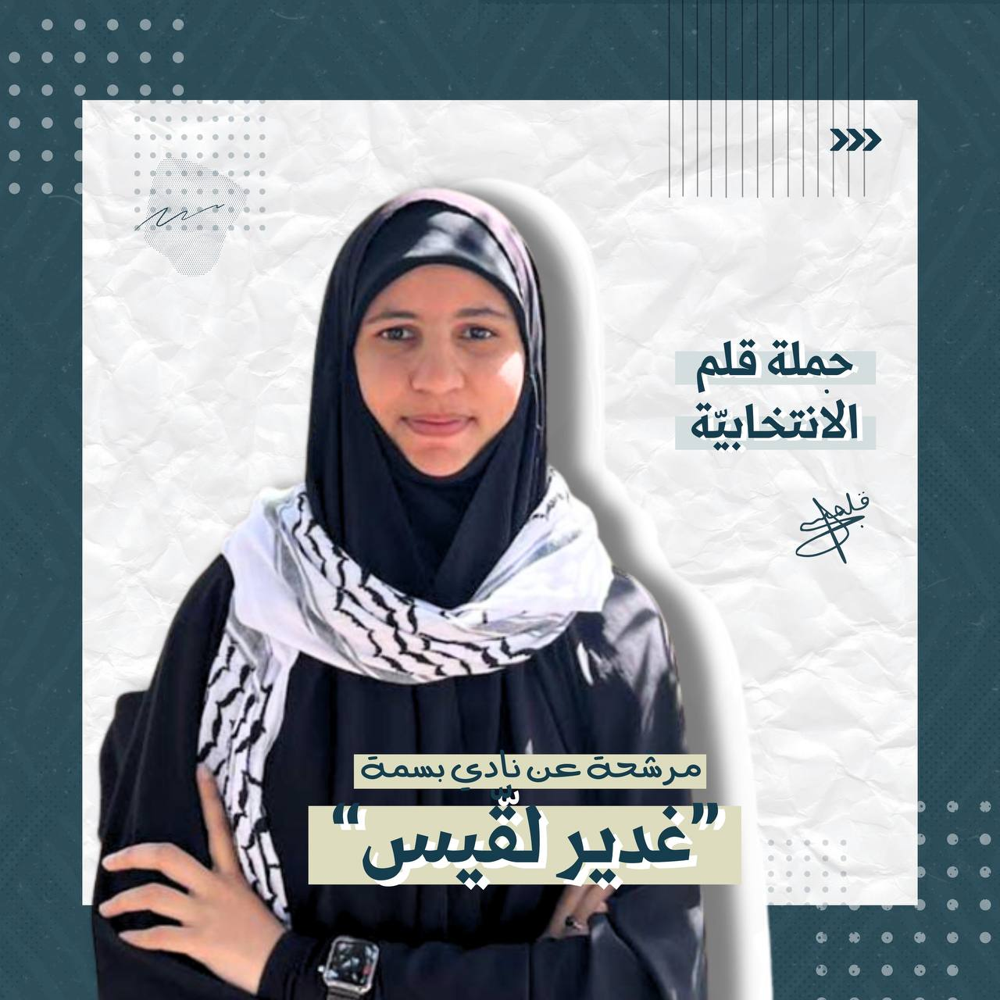
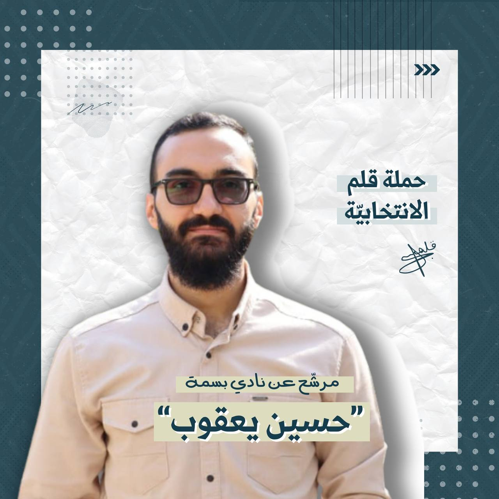
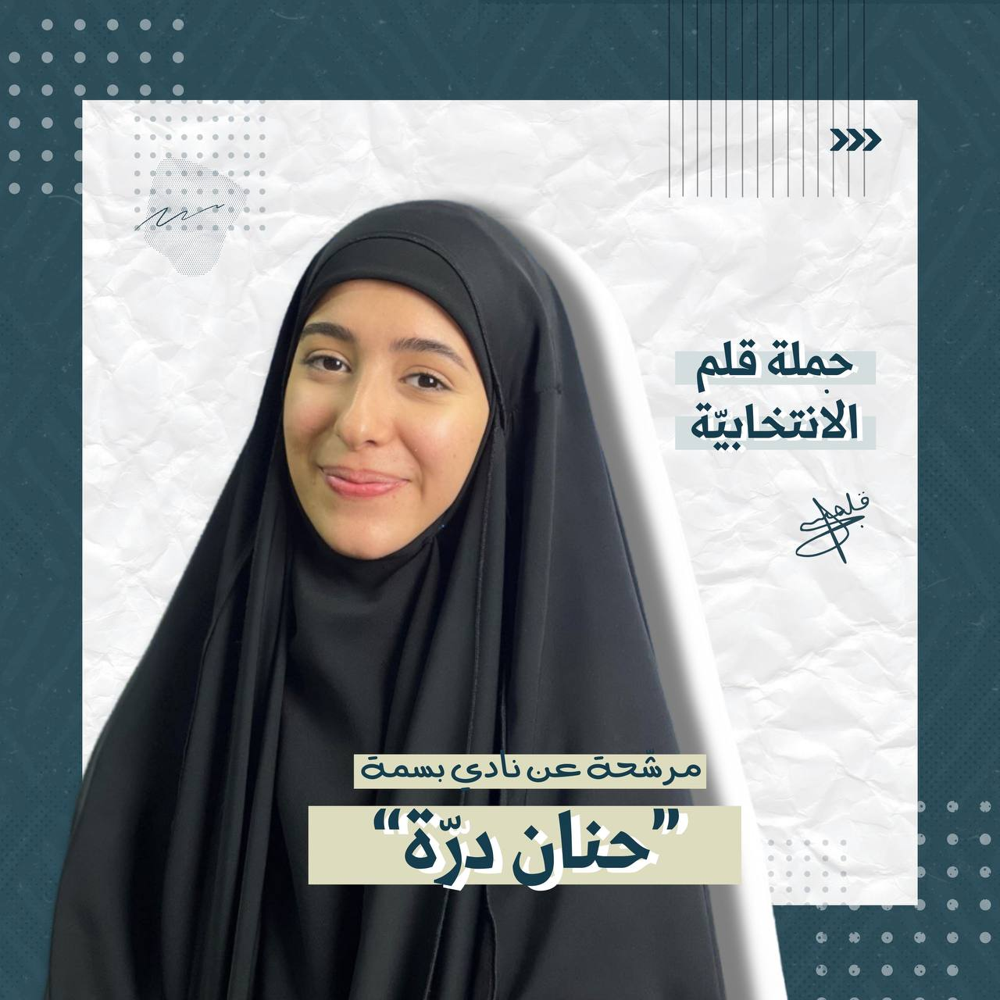

كلية الاعلام و الفنون
السنة الثالثة
دورات:
دورة جنود ،انصار
دورة تجويد قرآن
دورة حفظ و تفسير قرآن
دورة كروشيه
دورة موزيك مع جميعة ابداع
اعمال:
تطوع في كشاف القطاع الثالث
تطوع في فريق الخدمة مجتمعية
تطوع كتنظيم مع الهيئات النسائية ( خدمة في المساجد ، تنظيم في الاحياءات
، )
مشاركة في مشروع تقديم مساعدات بتعاون مع جمعية الامداد (ضمن مشاربع
جامعة)
عمل.مشروع فردي خدمة اجتماعية للعوائل المتعففة خلال فترة كورونا
تطوع للمهرجانات للاطفال ضمن الانشطة الكشفية
تطوع ضمن لجان التعبئة في المدرسة
مشاركة في معرض فني لجمعية ابداع
المشاركة في عروض تمثيلية للمفوضية
تسجيل صوتي لفيلم قصير
مشاركة في تحرير الاخبار مع موقع صدى الضاحية لفترة قصيرة
الصفات و المهارات:
تصوير
القاء
اعداد
خلق افكار

الاعلام والفنون
الخبرات السابقة بشكل تفصيلي:
متابعة ٣ سنوات في الأندية الطلابيّة-جامعة المعارف
شهادة مدربة في كشافة ومتابعة لمدة سنة ونصف.
متابعة مع العديد من الجمعيات في المخيمات الفلسطينية والسورية.
متابعة مع الهيئة الصحية الاسلامية في الاسعافات الاولية ودورات دعم نفسي
اجتماعي وانشطة اجتماعية ونفسية
متابعة اللاجئين الفلسطينيين بالمخيمات الفلسطينية مع الهلال الاحمر
الايراني والهيئة الصحية الاسلامية
تقديم دعم نفسي اجتماعي في فترة كورونا للعيل والأهالي في ضيع جنوبية
دورات تثقيف للنساء والمراهقات حول مواضيع عديدة بفترة كورونا وبعدها
متابعة تحفيظ القرآن مع دار الامام الجواد
متابعة الأنشطة والفعاليات مع الأطفال في مبادرة التعبئة التربوية في حام
عميدة فوج الخدمة المجتمعية في البلدة
عضو في تجمع الشبابي لبلدة عين بعال
تصوير فيديو وصور
اعداد برامج على صفحات سوشال ميديا
تقديم فيديوهات على السوشال ميديا للعديد من الصفحات
متابعة تحرير اخبار في صفحات اخبارية على السوشال ميديا
تسجيل صوتي لاعلانات وفيديوهات عديدة على السوشال ميديا
تدريب تصوير مع مركز مهدي للإنتاج- مستشفى سان جورج ومستشفى الرسول
تدريب مع وكالة كشافة الإمام المهدي
اعداد برامج ومحتوى اعلاى لصفحات سوشال ميديا
مؤهلات ومميزات شخصيّة:
اجازة علم نفس من الجامعة اللبنانية
دورة مدربة كشفية
دورة اسعاف أولي، مستوى أول ومستوى ثاني
دورة سيكودراما مع مركز سمات
دورة جنود وأنصار
دورة Improving focus and attention for children and special needs مع
مركز IABC
دورة العلاج النفسي عن طريق سرد القصص مع جامعة عين الشمس في مصر
اعداد اعداد وتصوير فيلم قصير
دورة اعداد فيلم وثائقي
دورة القاء مع المدربة اسراء مصطفى كوراني

الأديان والعلوم الإنسانية
متابعة سنتين في الأندية الطلابيّة-جامعة المعارف.
متابعة مع الهيئة الصحية الاسلامية في الاسعافات الأولية
متابعة المرضى والمسنين في فترة كورونا للعيل والأهالي في ضيع جنوبية
إعداد دورات وأنشطة وفعاليات (دورات لغة، دورات تأهيلية، دورات حِرف
وأشغال، دورات تقوية لطلاب الشهادات، مهرجانات بلدية، معارض،...)
ومساعدات اجتماعية خصوصًا في فترة كورونا وما تلاها من أزمة اقتصادية
إدارة اللجنة الإعلامية في تجمع الشبابي لبلدة جويا
عضو اللجنة الإعلامية في بلدية جويا
أرشفة وتقميش مواد بحثية
اعداد محتوى على صفحات سوشال ميديا
مؤهلات ومميزات شخصيّة:
دورة اسعاف أولي، مستوى أول وثاني، وإسعاف حربي
دورة جنود وأنصار (مستوى أول وثاني)
دورة تأهيلية في إخراج الأفلام الوثقائية مع الدكتور شادي زيدان
دورات تصوير
دورة خدمة مجتمعية
دورات لغة فارسية
دورة Microsoft مستوى متقدم

كلية العلوم
سنة ٣
دورات كشفية مستوى ثاني
دورات قرآن
متابع في كشافة الإمام المهدي لأكتر من 5 سنوات و مشارك بالعديد من أنشطة
الخدمة المجتمعية

كلّيّة الإعلام والفنون
السّنة الثّالثة
أبرز الصّفات:
نشيطة
مؤثّرة على مواقع التّواصل الإجتماعي
إجتماعيّة
أجيد التّعامل والحديث مع أشخاص من مختلف الأعمار
قائدة دليلات في كشّافة الإمام مهدي(عج)
الدّورات:
دورات جنود، أنصار
دورة قائدة
دورات تدريبيّة مع جمعيّة الدّراسات(بعلبك)
مشاركات:
تقديم ورش عمل حول مواضيع إجتماعيّة(زواج مبكر، طلاق، مشاكل أسريّة) مع
فئات معيّنة
تقديم ورش حول أمور إجتماعيّة قد تطال المراهقين (تسرب مدرسي،
مخدّرات...) في بعض المدارس(بعلبك)